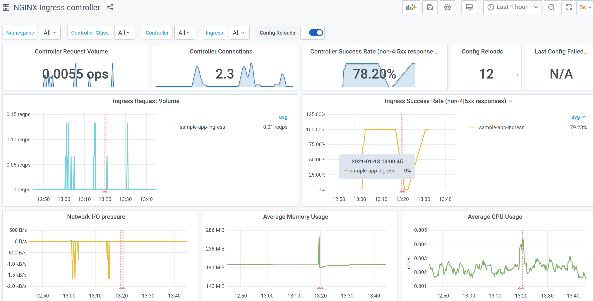

Exposing your app to the internet¶
Making your CAST AI hosted application available on the internet is done in the conventional Kubernetes way: by deploying an ingress.
CAST AI clusters are automatically provisioned with:
- Ingress controller and the necessary multi-cloud load balancers infrastructure;
- A certificate manager configured to manage TLS certificates with letsencrypt.org;
- Metric collection for your ingress traffic;
See architecture overview for more details.
Let's deploy, configure, and inspect a basic application: an empty Caddy server.
Prerequisites¶
First and foremost, you need to create or have a CAST AI cluster (guide) ready to go.
On the cluster details page in the console, note the "GSLB DNS" value. The value should look similar to 1234567890.your-cluster-name-7da6f229.onmulti.cloud once the cluster is done creating. This is the internal DNS name for your future ingress. But for the TLS setup to work, you'll also need an CNAME alias for it, using host name of your choice. For example, if you prepare to serve your application on https://sample-app.yourdomain.com, create a CNAME record in your DNS provider with the name sample-app and value 1234567890.your-cluster-name-7da6f229.onmulti.cloud.
Note
If you check the DNS resolution at this point, e.g. dig sample-app.yourdomain.com, you should be able to see that the name resolves to one or more cloud-specific load balancers.
Deployment¶
It's a rather bare-bones setup consisting of 2-replica deployment, a service description for that deployment, and an ingress resource to publish that service. Change value sample-app.yourdomain.com to the DNS CNAME that you created before, and deploy everything else as-is to your cluster.
apiVersion: apps/v1
kind: Deployment
metadata:
name: sample-app
spec:
replicas: 2
selector:
matchLabels:
app: sample-app
template:
metadata:
labels:
app: sample-app
spec:
containers:
- name: sample-app
image: caddy:2.2.1-alpine
ports:
- containerPort: 80
---
apiVersion: v1
kind: Service
metadata:
name: sample-app
spec:
type: NodePort
selector:
app: sample-app
ports:
- name: http
port: 80
targetPort: 80
---
apiVersion: networking.k8s.io/v1beta1
kind: Ingress
metadata:
name: sample-app-ingress
annotations:
kubernetes.io/ingress.class: "nginx"
cert-manager.io/cluster-issuer: "letsencrypt-prod"
spec:
tls:
- hosts:
- sample-app.yourdomain.com
secretName: sample-app
rules:
- host: sample-app.yourdomain.com
http:
paths:
- path: /
backend:
serviceName: sample-app
servicePort: http
Verification¶
After deploying the configuration above, the application should be ready for testing in a few moments. Check in the browser or CLI, e.g.:
$ curl -L -I sample-app.yourdomain.com
HTTP/1.1 308 Permanent Redirect
Date: Wed, 13 Jan 2021 11:30:52 GMT
Content-Type: text/html
Content-Length: 164
Connection: keep-alive
Location: https://sample-app.yourdomain.com/
HTTP/2 200
date: Wed, 13 Jan 2021 11:30:52 GMT
content-type: text/html; charset=utf-8
content-length: 12226
vary: Accept-Encoding
accept-ranges: bytes
etag: "qlhhn49fm"
last-modified: Thu, 17 Dec 2020 12:35:28 GMT
strict-transport-security: max-age=15724800; includeSubDomains
You can see a few things happening here:
- HTTP->HTTPS redirect is established automatically;
- Once redirected to HTTPS, your application TLS setup works properly (curl is able to verify certificate validity for your domain).
Deployment without CNAME alias¶
If you skipped the DNS setup until this point, you should still be able to ping your application and get a response back. The only difference is that TLS certificate will not be provisioned, as certificate manager can't complete a HTTP-01 challenge without LetsEncrypt being able to reach your app via the "official" URL.
To ping our app without a DNS CNAME, use the internal DNS name and pass "host" header for the ingress routing to work. You'll need to ignore certificate errors, as your application will be using self-signed certificate as a fallback.
$ curl -s -k -H "Host: sample-app.yourdomain.com" https://1234567890.your-cluster-name-7da6f229.onmulti.cloud | head -n 4
<!DOCTYPE html>
<html>
<head>
<title>Caddy works!</title>
If you don't intend creating a user-friendly url, another alternative is to use internal DNS name as ingress host. This will enable cert manager to provision proper TLS certificate and your app will be reachable via this name directly.
spec:
tls:
- hosts:
- 1234567890.your-cluster-name-7da6f229.onmulti.cloud
secretName: sample-app
rules:
- host: 1234567890.your-cluster-name-7da6f229.onmulti.cloud
http:
Metrics¶
Once you have your application up and running, you can check another out-of-the-box feature CAST AI configures for you: the ingress metrics and dashboard. Head to CAST.AI console, and in your cluster details page, click on the "Grafana metrics" link in the side menu. Once in Grafana, click "Home" in the top-left corner and open "NGINX Ingress controller" dashboard. You should be greeted with a view similar to this:

This dashboard provides an overview of your application traffic. To tailor the dashboard to your specific needs, refer to NGINX metrics documentation for more details on available metrics.
Combinations¶
Single host, multiple services¶
You can use path-based routing to redirect traffic to specific services using ingress rule paths:
spec:
rules:
- host: sample-app.yourdomain.com
http:
paths:
- path: /static
backend:
serviceName: static-resources
servicePort: http
- path: /
backend:
serviceName: base-app
servicePort: http
Multiple hosts¶
To manage multiple domains, you can just deploy multiple ingress resources, or include more domains into same ingress resource.
# first host
apiVersion: networking.k8s.io/v1beta1
kind: Ingress
metadata:
name: sample-app-ingress
annotations:
kubernetes.io/ingress.class: "nginx"
cert-manager.io/cluster-issuer: "letsencrypt-prod"
spec:
tls:
- hosts:
- sample-app.yourdomain.com
secretName: sample-app-cert
rules:
- host: sample-app.yourdomain.com
http:
paths:
- path: /
backend:
serviceName: sample-app
servicePort: http
---
# second host
apiVersion: networking.k8s.io/v1beta1
kind: Ingress
metadata:
name: sample-app-ingress2
annotations:
kubernetes.io/ingress.class: "nginx"
cert-manager.io/cluster-issuer: "letsencrypt-prod"
spec:
tls:
- hosts:
- sample-app2.yourdomain.com
# note that secret needs to be unique for each domain, unless deployments
# will be separated by kubernetes namespaces
secretName: sample-app-cert-2
rules:
- host: sample-app2.yourdomain.com
http:
paths:
- path: /
backend:
serviceName: sample-app2
servicePort: http
---
# combining: multiple hosts per certificate and/or multiple certificates per single ingress resource
apiVersion: networking.k8s.io/v1beta1
kind: Ingress
metadata:
name: sample-app-ingress3
annotations:
kubernetes.io/ingress.class: "nginx"
cert-manager.io/cluster-issuer: "letsencrypt-prod"
spec:
tls:
- hosts:
# two domains under single certificate
- sample-app3.yourdomain.com
- sample-app3-alternative.yourdomain.com
secretName: sample-app3-cert
- hosts:
# another side-by-side certificate
- sample-app4.yourdomain.com
secretName: sample-app4-cert
rules:
- host: sample-app3.yourdomain.com
http:
paths:
- path: /
backend:
serviceName: sample-app
servicePort: http
- host: sample-app3-alternative.yourdomain.com
http:
paths:
- path: /
backend:
serviceName: sample-app
servicePort: http
- host: sample-app4.yourdomain.com
http:
paths:
- path: /
backend:
serviceName: sample-app2
servicePort: http